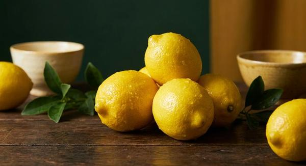
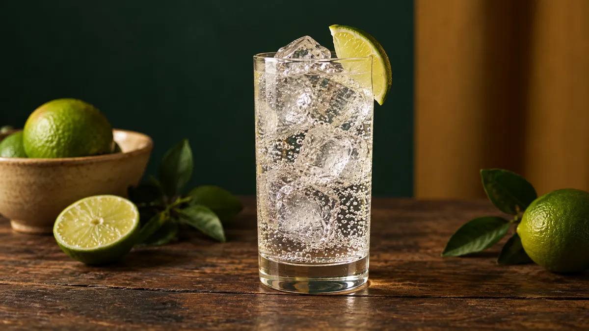
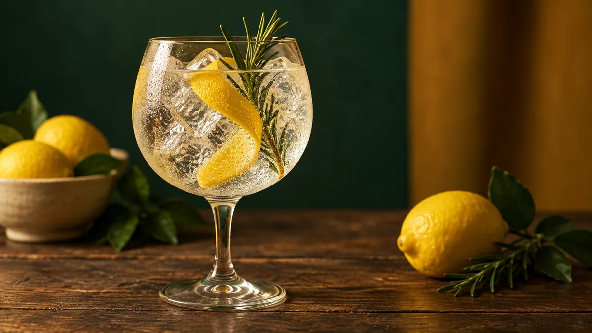
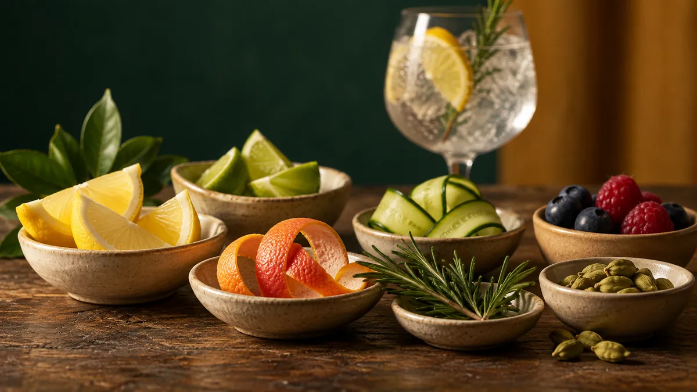

ジン&トニックの黄金比
完全ガイド

ジントニックの比率は、主要ブランドの公式レシピで1:2〜1:4。Diageo Bar Academy、Beefeater、Bombay Sapphire、サントリーROKUの公式の比率を並べ、Fever-Tree／Schweppes／ウィルキンソンなどトニック6銘柄を比較し、日本のクラフトジン銘柄別の合わせ方、氷・グラス・ガーニッシュ・作り方までを、出典つきでまとめました。
最終更新: 2026年10月30日 ／ 出典: Diageo Bar Academy、Difford's Guide、Master of Malt、Beefeater／Bombay Sapphire／Hendrick's／サントリーROKU 公式、Fever-Tree／Schweppes／ウィルキンソン／Fentimans／Q Mixers／London Essence Co. 公式、PUNCH、Tasting Table、各クラフトジン蒸溜所公式
1. ジントニックの起源 ─ 薬だったキニーネから
ジントニックの始まりは、マラリアの薬だったキニーネです。苦いキニーネ入りのトニックを、19世紀の英領インドでジンと合わせて飲むようになったのが始まりとする説が広く知られています。
マラリア対策 → 苦みを和らげる工夫 → カクテル化
主な出来事を年表にすると、次のとおりです。
| 年 | 出来事 |
|---|---|
| 1870年 | Schweppesが「Indian Tonic Water」を発売（Schweppes公式） |
| 19世紀 | 英領インドで、キニーネ入りのトニックをジンと合わせて飲むようになったとされる（説） |
| 2000年代初め | スペインのカタルーニャ・バスクで、ミシュランの星付きレストランのシェフたちが、仕事のあとにワイングラスでジントニックを飲み始める（PUNCH）。大きなグラスとたっぷりのガーニッシュの「ジントニカ」として広まる |
ジントニックは19世紀の英領インドで生まれたという説が有力で、大きなグラスで飲む今のスタイルは2000年代初めのスペインから広まりました。
日本での始まり
日本では、1889年頃に兵庫県宝塚で炭酸鉱泉が見つかったことに始まるウィルキンソンが、1966年にジンジャーエールなどとともにトニックを新しい瓶で発売しています（アサヒ飲料の公式の年表）。
Gin-DBで国産ジンの公式を1銘柄ずつ調べると、公式の飲み方が確かめられた銘柄のうち、ジントニックを勧めている銘柄は65ありました（2026年10月。ジンの割り方・飲み方）。サントリーROKUの公式サイトの「ROKU〈六〉1：トニック4でジントニック」がその代表例です。
2. 黄金比 ─ 1:2／1:3／1:4の使い分け
ジン:トニックウォーターの比率は、主要ブランドの公式レシピで1:2〜1:4です。並べると、その幅がよく見えます。
| ソース（公式） | ジン量 | トニック | 比率 |
|---|---|---|---|
| Diageo Bar Academy（Tanqueray） | 50ml | 200ml | 1:4 |
| Beefeater 公式 | 50ml | 125ml | 1:2.5 |
| Bombay Sapphire 公式 | 50ml | 100ml | 1:2 |
| Hendrick's 公式 | 50ml | 150ml | 1:3 |
| サントリー ROKU 公式 | 1 | 4 | 1:4 |
| Difford's Guide（標準） | 50ml | 120ml | 1:2.4 |
| Difford's Guide（Gin Tonica） | 60ml | 150ml | 1:2.5 |
| Master of Malt | 1/3 | 2/3 | 1:2 |
比率の目安 ─ 1:2は強め、1:4は軽め
Master of Malt は、ジン1/3・トニック2/3（1:2）を「しっかりしたジントニック」と書いています。
"One third gin to two thirds tonic makes a good strong G&T... but whatever you do, don't drown the gin in tonic."
— Master of Malt（ジン1/3：トニック2/3が良いストロングG&T。ただし、トニックでジンを溺れさせるな）
Gin-DBの目安としては、しっかり飲みたいなら1:2、真ん中が1:3、軽く飲みたいなら1:4です。公式の比率にも1:2から1:4まで幅があるので、好みで選んでかまいません。
アルコール度数別の比率の目安
度数に合わせて比率を変えるのもひとつの方法です。下の表はGin-DBの目安で、公式の比率ではありません（47%のROKUの公式は1:4です）。
| ジンの度数 | 該当銘柄例 | 比率の目安 |
|---|---|---|
| 40%前後 | 白兎-HAKUTO-（40%）、サントリー翠（40%）、9148 #0211 FUKINOTO（40%） | 1:2〜1:2.5 |
| 45〜47%（標準帯） | 季の美（45.7%）、ROKU（47%）、ohoro Standard（47%）、和美人（47%）、白兎プレミアム（47%）、ニッカ カフェジン（47%） | 1:3 |
| 54〜57%（ネイビーストレングス） | 季の美 勢（54.5%）、9148 #0303 NAVY STRENGTH（57%） | 1:3〜1:4 |
3. ジン選び ─ クラシック系 vs クラフト系
ジントニックに使うジンは大きく2つに分けて考えるとシンプルです。
クラシック系（ジュニパー前面）
Beefeater、Tanqueray、Bombay Sapphire などのロンドン・ドライ・ジンや、プリマス・ジン。ジュニパーベリーの香りが中心の、昔ながらのスタイルです。ジントニックの基本の味を知るなら、まずこの系統から試すとわかりやすいです。
Beefeaterの公式は、比率やトニック、ガーニッシュは好みで試してと前置きしたうえで、ジン50ml・トニック125mlを勧めています。Bombay Sapphireの公式は、バルーングラスでジン50ml・トニック100ml、ライムを添えます。
日本のクラフトジンでクラシック系の方向性に当てはまるのは、ohoro GIN Standard（World Gin Awards 2024 Classic Gin部門 World's Best）など。
クラフト系・コンテンポラリー系（個性派ボタニカル）
Hendrick's（ローズ・きゅうり）、サントリー ROKU（桜花・桜葉・煎茶・玉露・山椒・柚子）、季の美 京都ドライジン、和美人（鹿児島）、白兎プレミアム（鳥取）。これらは蒸溜所固有のボタニカルが香りの主役になっています。
クラフト系は香りの個性が強いので、公式のレシピがあればそれに合わせるのが近道です。サントリーは ROKU の公式サイトで ROKU〈六〉1：トニック4を紹介し、Hendrick's の公式は きゅうりの薄切り3枚を添えて、ジンの「rose and cucumber infusion」を引き立てるとしています。
ネイビーストレングス系という選択肢
度数の高いジンを「ネイビーストレングス」と呼ぶことがあります。
日本では9148 #0303 NAVY STRENGTH（紅櫻蒸溜所、57%、¥8,910税込）があります。
4. トニックウォーター主要6銘柄 完全比較
ジントニックの大半はトニックウォーターです。Fever-Treeの公式も「ドリンクの4分の3がミキサーなら、最高のものにしたいと思わないか」と書いています。日本でも手に入る主要ブランドを、公式の情報で整理します。
| ブランド | 創業/起源 | 特徴 | 合うジンの傾向 |
|---|---|---|---|
| Fever-Tree（英） | 2005年 最初のトニック発売 | コンゴ民主共和国のキニーネとメキシコのビターオレンジの油を使う。Premium Indian、Mediterranean、Elderflower、Aromatic などのトニックがある | 公式は Premium Indian を「最高のジンを引き立てる」ように造ったとし、Elderflower は「フレッシュでフローラルなジン」に合うとしている |
| Schweppes（英・スイス） | 1783年 | ジュネーブで創業。1870年に Indian Tonic Water を発売した | — |
| ウィルキンソン（日） | 1889年頃起源 1966年トニック | 兵庫県宝塚で見つかった炭酸鉱泉が起源。1966年にジンジャーエールなどとともにトニックを新しい瓶で発売。トニックは100mlあたり38kcal | 公式は「すっきりとした苦みと、さわやかな酸味」「しっかりとした炭酸感」と説明している |
| Fentimans（英） | 1905年 | ボタニカルを発酵させたエキスを使う「Botanically Brewed」のトニック。Premium Indian Tonic Water は公式の栄養表示で100mlあたり20kcal・糖類4.4g | 公式はロンドン・ドライ・ジンにレモンを添える飲み方を勧める |
| Q Mixers（米） | — | オーガニックのアガベで甘みをつけ、甘さ控えめ。Tonic Water は公式の栄養表示で1缶45kcal・糖類11g | 公式は「Crisp & Dry」とうたう、甘さを抑えたキレのある味 |
| London Essence Co.（英） | 1896年創業 2016年に再始動 | ロンドンの香水メーカー向けのエッセンス作りから始まった会社。ボタニカルを蒸留して香りをとる | 公式は Original Indian Tonic を「軽く低カロリー」で、選んだお酒の味を引き立て、幅広いジンに合うとしている |
初心者へのおすすめは「2本だけ揃える」
迷ったら、輸入品の Fever-Tree Premium Indian Tonic と国産の ウィルキンソン トニックの2本から試してみてください。どちらも通販で買えて、飲み比べるとトニックで味がどう変わるかがよくわかります。
トニックの「Mediterranean／Elderflower」ラインで遊ぶ
Fever-Treeは複数のトニックを出しています。公式の説明で違いをみると、次の3種がわかりやすいです。
- Premium Indian Tonic: 基本の1本。キニーネとビターオレンジの油などで造る。
- Mediterranean Tonic: 地中海沿岸のハーブの油を使い、ローズマリーとレモンタイムがほのかに香る、軽めで香りの華やかなトニック。
- Elderflower Tonic: エルダーフラワーの香り。公式は「フレッシュでフローラルなジン」に合うとしている。
トニックは開けたてを使う
トニックウォーターは開けると炭酸が抜けていきます。Master of Malt は小さな缶や瓶を使うよう勧め、Hendrick's の公式も開けたての冷えたトニックを使うよう書いています。大きなボトルを飲みきれないなら、小さな瓶や缶を1杯ごとに開けると炭酸が保てます。
出典: Fever-Tree公式、Schweppes公式、アサヒ飲料 ウィルキンソン公式（年表）、ウィルキンソン トニック 商品ページ、Fentimans公式、Q Mixers公式、London Essence公式
5. 氷 ─ たっぷり、冷たく
仕上がりを大きく左右するのが氷です。Diageo Bar Academy はこう書いています（元のページは2026年10月時点で公開終了）。

"The key is cubed ice and plenty of it. You can never over-chill a good G&T."
— Diageo Bar Academy（鍵はキューブアイスを、たっぷり。良いG&Tは冷やしすぎることはない）
氷はたっぷり、冷凍庫から出したてを
Master of Malt も、氷は冷凍庫から出したてを使い、冷たい氷が多いほど溶けるのが遅くなると書いています。穴のあいた市販の氷はすぐ溶けるので、製氷皿とろ過した水で自分で作るよう勧めています。
3種の氷の違い
- 家庭の冷凍庫の氷: 製氷皿で作る氷。Master of Malt はろ過した水で作るよう勧めている
- 市販のかち割り氷・ロックアイス: 大きめで手軽。穴のあいた形の氷はすぐ溶けやすい（Master of Malt）
- 純氷（透明な氷）: 時間をかけて凍らせた透明な氷。見た目がきれい
大事なのは、冷凍庫から出したての冷たい氷を、たっぷり使うことです。
グラスも冷やしておく
グラスを冷やしておくと、氷が溶けにくくなります。冷凍庫にしばらく入れておくか、氷を入れて回し、溶けた水を捨ててから作ります。
6. グラス選び ─ コパ・デ・バロンとタンブラー
ジントニックには大きく2つのグラス文化があります。

| グラス | 特徴 | 使うシーン |
|---|---|---|
| タンブラー （ハイボール／ Collinsグラス） | 背が高く細身。洗いやすく、毎日使いやすい | クラシックなロンドン・ドライ・ジン。さっぱり飲みたい日常使い |
| コパ・デ・バロン （バルーングラス） | 大きなボウルとステム（脚）付き。手の熱が飲み物に伝わりにくい | クラフト系・ボタニカル個性派・スペイン式ジントニカ |
コパ・デ・バロンで飲むようになった経緯
スペインのジントニカは、2000年代初め、カタルーニャとバスクのミシュラン星付きレストランのシェフたちが、仕事のあとに厨房にあったワイングラスで飲み始めたのがきっかけだと、米国のカクテル専門メディア PUNCH が伝えています。
フロリダの Amal, Level 6 で飲料の運営を担当する Caitlinn Santiesteban 氏は、Tasting Table の取材に、ステムを持てば手の熱で氷が溶けて薄まるのを早めない、と話しています。
家庭で1脚そろえるなら
香りを楽しみたいならコパ・デ・バロン、毎日気軽に飲みたいならタンブラーが使いやすいです。コパ・デ・バロンは赤ワインなどにも使えます。
タンブラー派の利点も忘れずに
タンブラー（コリンズグラス）は背が高く細身で、洗いやすく丈夫なものが多いのが利点です。ジン50ml・トニック150ml（1:3）に氷を入れても収まります。毎日使うならタンブラー、香りを楽しむ日はコパ・デ・バロン、と両方そろえるのもおすすめです。
7. ガーニッシュ ─ 「対比か、強調か」
ジントニックのガーニッシュ（飾り）は、見た目だけでなく香りと味を変えます。Diageo Bar Academy はこう書いています。

"A garnish should either directly contrast or accentuate the flavors of your G&T"
— Diageo Bar Academy（ガーニッシュは飲料の風味を「対比させる」か「強調する」かのどちらかであるべき）
ジンのタイプ別おすすめガーニッシュ
| ジンのタイプ | おすすめガーニッシュ | 狙い |
|---|---|---|
| クラシック （ジュニパー強め） | レモン、ライム、グレープフルーツ | Diageo Bar Academy：ジュニパーの強いジンには柑橘 |
| シトラス系・明るいジン | ローズマリー、セージ、タイムなど木質のハーブ | Diageo Bar Academy：柑橘系のジンには木質のハーブ |
| フローラル系 | 何も添えない、またはラズベリーなどの柔らかい果物・きゅうり | Diageo Bar Academy：繊細なフローラル系のジンは添えない方がよいことが多い |
| スペイン式（Gin Tonica） | カルダモンポッド3粒＋レモンゼスト＋ライム | Difford's Guide標準レシピ |
| 和ジン全般 | 柚子皮、生姜スライス、山椒の若葉（木の芽） | Gin-DBの提案：使っているボタニカルに合わせる |
ジンのボタニカルに合わせて選ぶ
いつもレモン、ではなく、ジンのボタニカルに合わせて選ぶと香りが変わります。Hendrick's の公式はきゅうり、ROKU の公式はソーダ割りに針生姜などの季節のトッピングを添えています。季の美に山椒の若葉（木の芽）を添えるのは、Gin-DBの提案です。
ガーニッシュの「使い方」 ─ 振るのか、入れるのか
柑橘の皮は、皮の外側をグラスに向けてひねって香りの油を飛ばし、縁をなぞってからグラスに浮かべるのが一般的です。これを「ツイスト」と呼びます。
ローズマリーやタイムなどのハーブは、手のひらで軽く叩いてから添えると香りが立ちます。
8. 作り方の手順 ─ 注ぎ方と混ぜ方
ここまでの内容を、家庭で作る手順にまとめます。出典のある点は名前を添えました。
- グラスを冷やす: 氷を入れて軽く回し、溶けた水を捨てる
- 新しい氷をたっぷり入れる: 冷凍庫から出したての氷を、グラスの上まで（Master of Malt）
- ジンを先に注ぐ: 氷→ジン→トニックの順（Beefeater・Bombay Sapphire の公式どおり）
- トニックを静かに注ぐ: 氷やバースプーンを伝わせて静かに。炭酸を逃がさないため
- 混ぜすぎない: Master of Malt は「混ぜすぎると泡が抜ける」としています。一方、Diageo Bar Academy の記事は「最低1分のステア」で薄まり具合と温度を整えるとしています。炭酸を残したいなら軽く、冷たさを優先するならしっかり混ぜます
- ガーニッシュを添える: 柑橘の皮はひねって香りを飛ばし、縁をなぞってから浮かべる
迷ったら覚えるのは2点
「氷→ジン→トニックの順」「氷はたっぷり」。この2つから始めてみてください。
よくある失敗
よくある失敗と直し方です。
- 「水っぽい」──氷が少ない・小さい、グラスがぬるい、混ぜすぎ。氷はたっぷり入れ、グラスは冷やしておく。
- 「炭酸が抜けている」──トニックを勢いよく注いだ、強く混ぜた、開けてから時間がたったトニックを使った。静かに注ぎ、トニックは開けたてを使う。
- 「香りが物足りない」──トニックが多すぎる、ガーニッシュを添えていない。比率を1:2〜1:3に寄せ、柑橘の皮をひねって香りを足す。
ジンは冷やしておくのもおすすめです。Master of Malt は「ジンは冷凍庫、トニックは冷蔵庫」で冷やしておくよう勧めています。冷たいジンとトニックを使うと、氷が溶けにくくなります。
9. 日本のクラフトジン銘柄別 合わせ方
ここからは、Gin-DBで一次ソースを確かめた日本のクラフトジンについて、公式の情報と、ボタニカルから考えたGin-DBの提案（比率・ガーニッシュ）を整理します。ここで取り上げる銘柄のうち、公式のジントニックの比率が出ているのは ROKU だけで、ほかの比率とガーニッシュはGin-DBの提案です。
サントリー ROKU〈六〉（47%、¥4,000税抜）
サントリー大阪工場で製造される、和素材6種（桜花・桜葉・煎茶・玉露・山椒・柚子）＋伝統8種の合計14種ボタニカル。国内の公式サイトの割合は「ROKU〈六〉1：トニック4」で、トニックとソーダを半々にする「ROKU〈六〉1：トニック2：ソーダ2」のジンソニックも紹介しています。ソーダ割りには「針生姜（6本）」などの季節のトッピングも勧めています。 World Gin Awards 2025 で Gold（Classic Gin部門）。
京都蒸溜所 季の美 京都ドライジン（45.7%、オープン価格）
玉露・柚子・山椒・木の芽・赤紫蘇・笹を含む11種ボタニカルを「6つのエレメント」に分けて別々に蒸留する独自製法。公式が勧める飲み方は、ソニック、柚子ギムレット、抹茶トニック。Gin-DBの提案は、1:3に柚子の皮か山椒の若葉（木の芽）を添える組み合わせ。
ニセコ蒸溜所 ohoro GIN Standard（47%、¥4,500税別）
北海道のヤチヤナギ・ニホンハッカが主役の、公式によると「芯のあるしっかりとした味わい」のジン。World Gin Awards 2024 Classic Gin部門 World's Best受賞。Gin-DBの提案は1:2〜1:3に、ボタニカルのニホンハッカに合わせてミントの枝を1本。
松井酒造 白兎プレミアム（47%、¥3,960税込）
鳥取県名産の梨・玉露・サクラ・和山椒・ブラックペッパーなど14種ボタニカル（基本9種＋プレミアム5種）。World Gin Awards 2025 Contemporary Style Gin部門 World's Best受賞。Gin-DBの提案は1:3に梨のスライスを1枚。ボタニカルの鳥取の梨に合わせる。
本坊酒造 和美人（47%、¥4,180〜¥4,400税込）
鹿児島マルス津貫蒸溜所製。柚子・辺塚橙・レモン・金柑（津貫加世田産）の柑橘4種＋けせん（ニードルウッド）・月桃・緑茶・生姜・紫蘇など、ジュニパー・コリアンダーを含む計11種。TWSC 2024 Best of the Best受賞。Gin-DBの提案は1:3に紫蘇の葉を1枚。
ニッカウヰスキー ニッカ カフェジン（47%、¥4,500税別・参考小売価格）
1963年導入のカフェ式連続蒸留機を活かした個性派。柚子・甘夏・かぼすなどの和柑橘と山椒のアクセントが特徴。Gin-DBの提案は1:3にグレープフルーツをひと切れ。World Gin Awards 2019 Goldほか受賞歴。
サクラオB&D SAKURAO GIN ORIGINAL（47%、¥2,000税別・公式参考小売価格）
広島産9種（レモン・ネーブル・夏みかん・緑ゆず・ダイダイ・ヒノキ・緑茶・赤しそ・ジンジャー）＋海外5種の14種。TWSC 2022 最高金賞（カテゴリーウィナー・ベスト・コストパフォーマンス賞）。Gin-DBの提案は1:2.5〜1:3にローズマリーの枝を1本。
養命酒製造 香の森（47%、¥5,192税込・公式希望小売）
クロモジ（黒文字）の細枝・葉・太枝を使った、長野・養命酒製造のジン。クロモジの細枝のみを加えて蒸留した液と、ほかのボタニカルを蒸留した液をブレンドする独自の製法。公式の飲み方はロック・ジンライム・炭酸割りなど。Gin-DBの提案は1:3でガーニッシュなし。World Gin Awards 2025 Gold受賞。2026年10月時点で、養命酒の公式サイトの商品ページは表示されません。
紅櫻蒸溜所 9148 #0303 NAVY STRENGTH（57%、¥8,910税込）
札幌・紅櫻蒸溜所のネイビーストレングス版で、公式によると「#0101」を基礎にボタニカルを3倍以上使っています。Gin-DBの提案は1:3.5〜1:4にレモンの皮。
10. よくある質問（FAQ）
Q1. 黄金比は結局1:2と1:3どっちが正解？
「正解」は1つではありません。公式の比率も、Bombay Sapphire の1:2から、サントリーROKU・Diageo Bar Academy の1:4まで幅があります。Gin-DBの目安では、しっかり飲みたいなら1:2、真ん中が1:3、軽く飲みたいなら1:4です。
Q2. 家庭で一番手軽にプロっぽくする方法は？
「グラスを冷やしておく」「冷たい氷をたっぷり入れる」「トニックを静かに注ぐ」「混ぜすぎない」の4つから始めてみてください。器具を買い足す前にできることです。
Q3. シェーカーで振ってもいい？
シェイクはしません。トニックの炭酸が抜けてしまうからです。氷・ジン・トニックの順に入れ、軽く混ぜれば十分です。
Q4. ジンを冷凍庫で冷やしておくべき？
冷やしておくのはおすすめです。Master of Malt は「ジンは冷凍庫、トニックは冷蔵庫」で冷やすよう勧めています。ジンとトニックが冷たいほど、氷が溶けにくく薄まりにくくなります。
Q5. トニックウォーターは何を選べば失敗しない？
まずは輸入品のFever-Tree Premium Indian Tonicと国産のウィルキンソン トニックから試すのがおすすめです。どちらも通販で買えて、飲み比べるとトニックによる味の違いがわかります。Fever-Treeの公式は Premium Indian を「最高のジンを引き立てる」ように造ったとし、ウィルキンソンの公式は「すっきりとした苦みと、さわやかな酸味」と説明しています。
Q6. ジントニック1杯のカロリーは？
ジン50ml＋トニックウォーター150ml（1:3）なら、度数40%で約169kcal、47%で約189kcalです（ジンは度数から計算、トニックはウィルキンソン トニックの公式値100mlあたり38kcalで計算）。ソーダで割ればトニックの分のカロリーはかかりません。くわしくはジンのカロリー・糖質へ。
Q7. 「ジン&ソーダ」とジントニックの違いは？
ジン&ソーダは、トニックウォーターの代わりに無糖のソーダ水（炭酸水）で割る飲み方です。トニックの甘みと苦みがない分、ジンの香りがそのまま出ます。Gin-DBで国産ジンの公式を調べると、勧められている飲み方はソーダ割りが77銘柄でいちばん多く、ジントニックは65銘柄でした（ジンの割り方・飲み方）。
Q8. レモンとライム、結局どっちがいい？
公式の添え方は銘柄ごとに違います。Tanqueray（Diageo Bar Academy のレシピ）はライム、Beefeater の公式はレモンとオレンジです。Diageo Bar Academy は、柑橘系のジンには木質のハーブ、ジュニパーの強いジンには柑橘、繊細なフローラル系のジンは何も添えないか柔らかい果物を、と書いています。銘柄を変えたら、ガーニッシュも変えてみてください。
Q9. ホームバーで揃えるべきグラスはどれ？
1脚だけそろえるなら、香りを楽しむならコパ・デ・バロン（バルーングラス）、毎日使うならタンブラー（コリンズグラス）が使いやすいです。
Q10. ジントニックに合う食事は？
Gin-DBの提案としては、魚介・サラダ・天ぷら・寿司・チーズなど。和ジンのジントニックなら、季の美＋寿司、ROKU＋天ぷら、和美人＋焼き魚、白兎＋梨のデザートといった組み合わせも試してみてください。
11. まとめ
この記事のポイントです。
- 比率は公式でも1:2〜1:4と幅がある。Gin-DBの目安は、しっかりなら1:2、真ん中が1:3、軽くなら1:4。
- 氷はたっぷり、グラスは冷やしておく。氷は冷凍庫から出したての冷たいものを。
- ガーニッシュは「対比か、強調か」（Diageo Bar Academy）。ジンのボタニカルに合わせて選ぶ。
- 作り方は「氷→ジン→トニックの順」。トニックは開けたてを静かに注ぐ。
- ジンの選択肢は多い。季の美・ROKU・ohoro・白兎・和美人から始め、好みの香りを軸に広げていく。
ジントニックは、ジンとトニックと氷とガーニッシュだけの飲み物ですが、比率・氷・グラス・ガーニッシュで味が変わります。好きなジンとトニックを1本ずつ、たっぷりの氷、グラス、柑橘の皮をそろえて、いろいろ試してみてください。
あとは、グラスを冷凍庫から取り出すだけです。乾杯。
12. 関連リンク
ジンの割り方・飲み方
ソーダ・トニック・お茶まで、国産ジンの公式の比率と作り方
クラフトジンとは？初心者向け完全ガイド
スピリッツの定義からボタニカル・蒸留方法までを完全網羅
ボタニカル完全図鑑
古典10種＋和ボタニカル10種を学名・主産地・使用蒸溜所まで深掘り
マティーニ完全ガイド
ドライ／ウェット／ヴェスパー／ギブソンを使い分ける
ボタニカル逆引き
柚子・山椒・玉露…ボタニカルから日本のジンを探す
World Gin Awards 日本受賞史
2024年・2025年に世界最高賞を取った日本のジンを年表で
蒸溜所一覧
北海道から沖縄まで、検証済みのクラフトジン蒸溜所を地域別に
この記事に登場したクラフトジンを買う
この記事で取り上げた銘柄のうち、国際コンテストの受賞歴があり、公式希望小売価格が確認できているものだけを載せています。編集部の主観による順位づけはしていません。掲載外の銘柄も、記事中のリンクから各銘柄ページを開けば購入先を確認できます。


PR ／ アフィリエイトリンクを含みます。